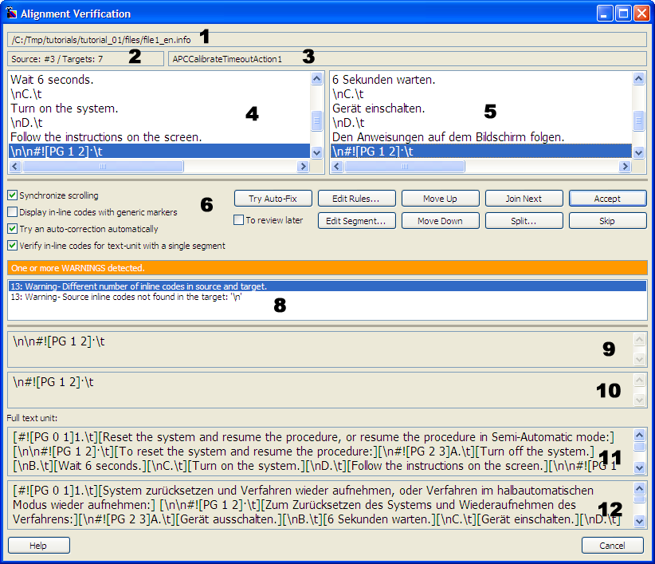

Okapi Framework - UtilitiesID-Based Alignment - Alignment Verification |
If you are using an Okapi Tool after the M9 release, you should be using the wiki online help:
http://okapiframework.org/wiki/index.php?title=Rainbow
This dialog box allows you to verify and correct the automated alignment generated by the ID-Based Alignment utility.

Source #3 /
Targets: 2144 means that you are aligning the third text unit of the
source, and that there are 2144 text units in the target.['
and ']' characters.['
and ']' characters.Synchronize scrolling -- Set this option to make synchronize the source and target segments list. When this option is set, selecting a segment in either the source or the target list will move the selection to the corresponding segment in the other list (if there is a corresponding segment).
Display in-line codes with generic markers -- Set this
option to shown the in-line code as generic numbered place-holders instead of
their real content. For example if you have a segment "Page [PgNum]"
and "[PgNum]" is an in-line code, with this option set it will be
shown as "Page <1/>".
Try an auto-correction automatically -- Set this option to automatically try to auto-correct segmentation when starting to edit the current text unit. This is the equivalent of clicking the Try Auto-Fix button immediately after the dialog box opens with a segmented text where incorrect segmentation has been detected. You are likely to want this option set all the time.
Verify in-line codes for text unit with a single segment -- Set this option to run the in-line code checker even on text units that have a single segment. In such segments any in-line code differences between source and target is not due to incorrect segmentation since both text units are seen as a single segment. So the differences are likely to be normal and may not be worth verifying.
Try Auto-Fix -- Click this button to try to automatically merge some segments that may be incorrectly split. The changes are based on the presence of anchor points in different segments. If the option Try an auto-correction automatically is set you do not have to use this button as the auto-correction is run each time you make a modification.
To review later -- Set this option to mark all the
segments for the current text unit with a special attribute "TO-REVIEW"
in the TMX output. This allows you to flag alignments to be checked for
correctness (For example when a localization engineer performs the alignment and
the result needs it to be reviewed by a linguist). This flag is not set by default on any
text unit.
Edit Rules -- Click this button to open the Segmentation Rules Editor for the current set of rules used. Note that any change you make in the rules is not reflected on the current alignment process. They will take effect next time after you are done with the current process.
Edit Segment -- Click this button to edit the content of the current target segment. You must preserve the in-line codes.
Move Up -- Swaps the target segment currently selected with the one just above.
Move Down -- Swaps the target segment currently selected with the one just below.
Join Next -- Joins the target segment currently selected with the one just below, transforming both segments into a single new one.
Split -- Enables the target segment edit field so you can select a location in the target segment currently selected where to split it into two new segments. The segment will be split at the location of the cursor. If you select part of the segment content, the selection will be left as a non-segmented text between the two new segments.
Accept -- Accepts the current alignment and moves to the next text unit to align. This command is disabled if there is an error detected in the current alignment.
Skip -- Moves to the next text unit to align without saving the current one into the TMX output.
If you right-click the source or the target segments lists you open the context menu:
Get Machine Translation of Source -- Select this command to get a machine translation of the source segment currently selected. The translation is just a guess, but may help you in identifying the corresponding target segment of the given source segment. Note that the current source-to-target language pair may not be available in the machine translation engine.
Get Machine Translation of Target -- Select this command to get a machine translation of the target segment currently selected. The translation is just a guess, but may help you in identifying the corresponding source segment of the given target segment. Note that the current target-to-source language pair may not be available in the machine translation engine.